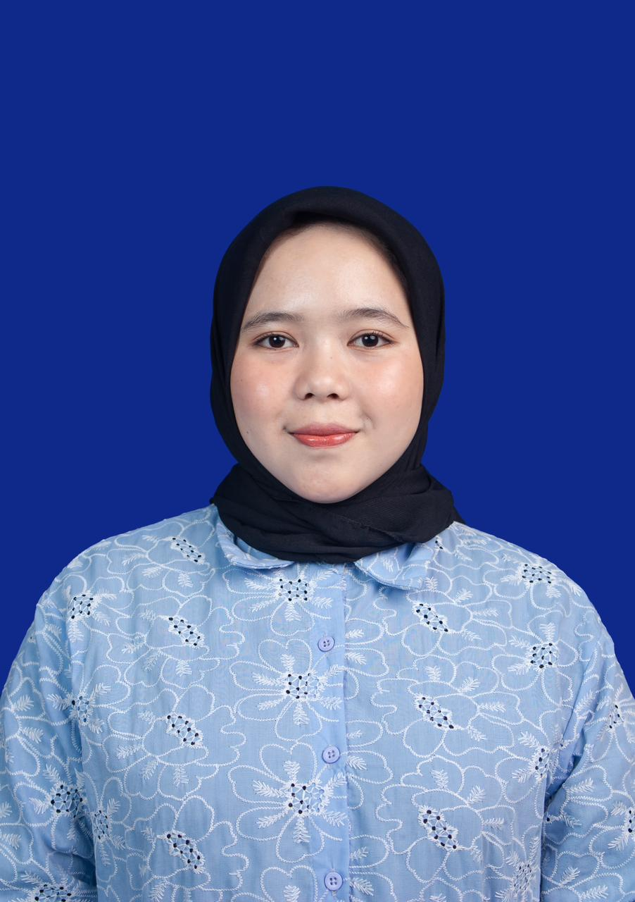
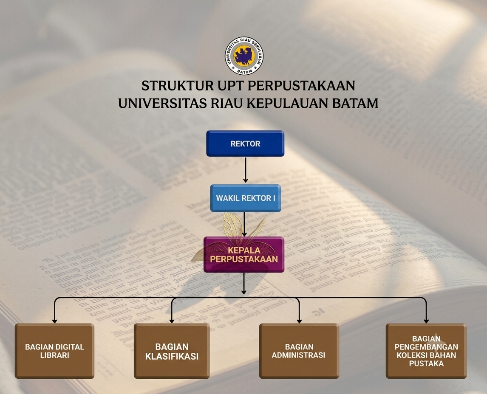

Mengenal lebih dekat Visi, Misi, Struktur, dan Pimpinan Perpustakaan UNRIKA
MENJADI PERPUSTAKAAN PERGURUAN TINGGI YANG UNGGUL, KREATIF DAN MANDIRI BERBASIS TEKNOLOGI DALAM MENDUKUNG TRIDHARMA PERGURUAN TINGGI SERTA PENGEMBANGAN ILMU PENGETAHUAN DI TINGKAT INTERNASIONAL
Kepala Perpustakaan
"Perpustakaan adalah jantungnya universitas, mari jadikan tempat ini sebagai rumah yang nyaman untuk berkembangnya ilmu pengetahuan."
Bagian Klasifikasi

Bagian Administrasi
Bagian Digital Library
Bagian Pengembangan Koleksi Bahan Pustaka
Bagan alur koordinasi dan staf yang bertugas di Perpustakaan UNRIKA

Bagan Struktur Organisasi Perpustakaan UNRIKA